Green Wellbeing is an Icelandic public-benefit organisation working across environment, wellbeing and intercultural community life. We run Climate Cafés and practical education with libraries, community gardens and cultural houses — and we build shared methods with partners across the Nordic region.
People rarely lack information about environmental change. What is missing is a way to act on it that feels meaningful — a practical step small enough to actually take, from a place of wellbeing rather than worry. Everything we run is built around that gap.
Practical workshops in a Reykjavík community garden and on a regenerative farm: how to compost, and how to grow a no-dig garden the permaculture way. Alongside them, community-garden sessions on how to garden from scratch for people who have never grown anything, nature activities for children, and workshops on preserving local food and herbs.
Our workshops are practical and hands-on, and open to people of all ages and backgrounds.
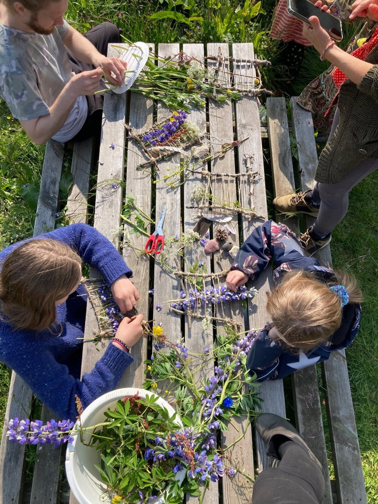
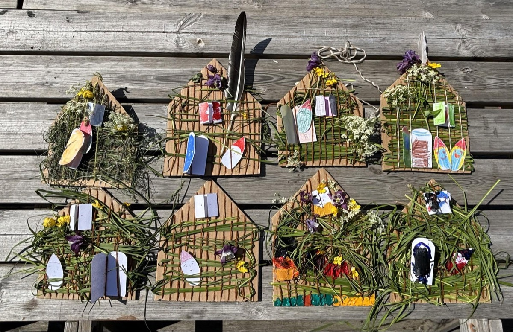
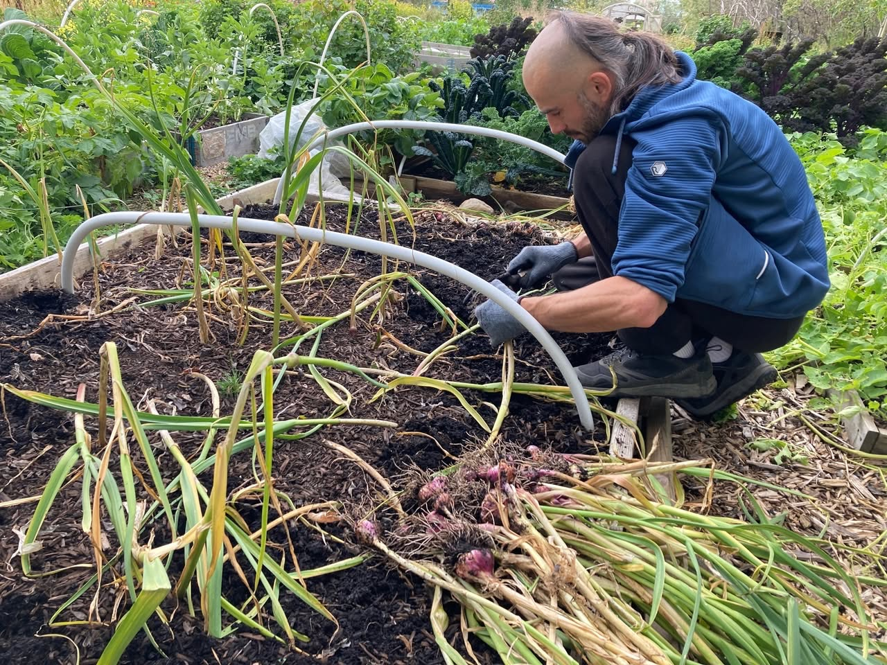
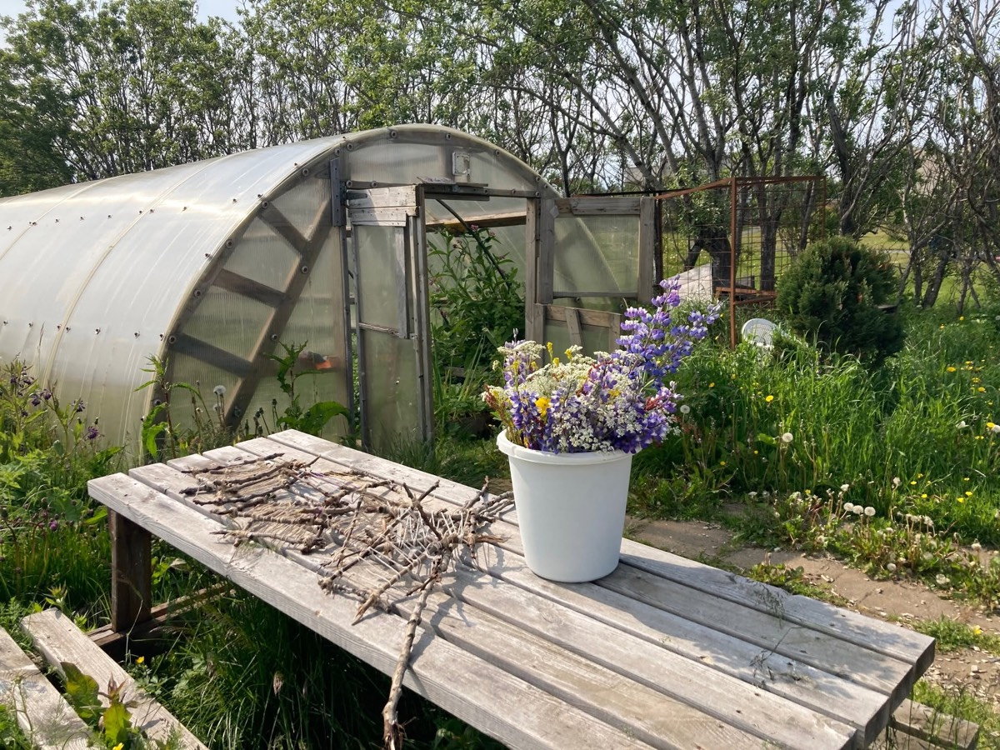
A facilitated public conversation that holds two things at once: room for worry, grief and hope, and a learning-by-doing session that ends by naming something people can actually do. Free, all ages, open to everyone — and deliberately held in libraries, because a library is somewhere people already go without needing a reason.
Each café had its own theme and its own local co-facilitator — a grower, an artist, a researcher, an organiser — so every event brought a different kind of knowledge into the room. Eleven local collaborators took part across the programme. Participant interviews were recorded and published on social media.
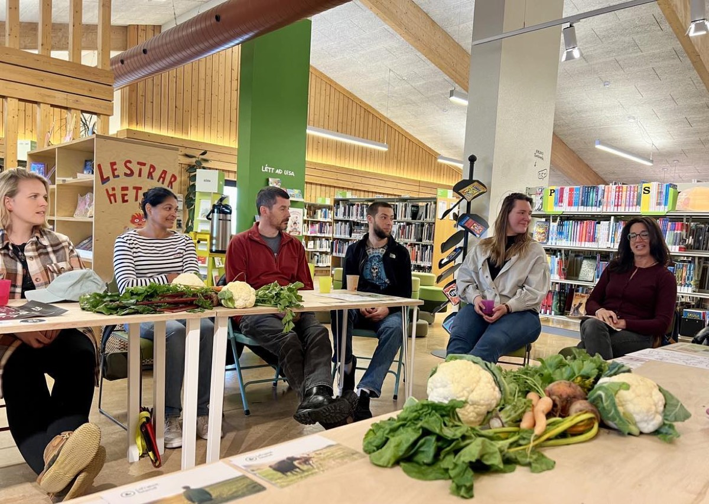
A panel around a table of vegetables in the children's library — growers and organisers on what actually grows here, and who gets to grow it.
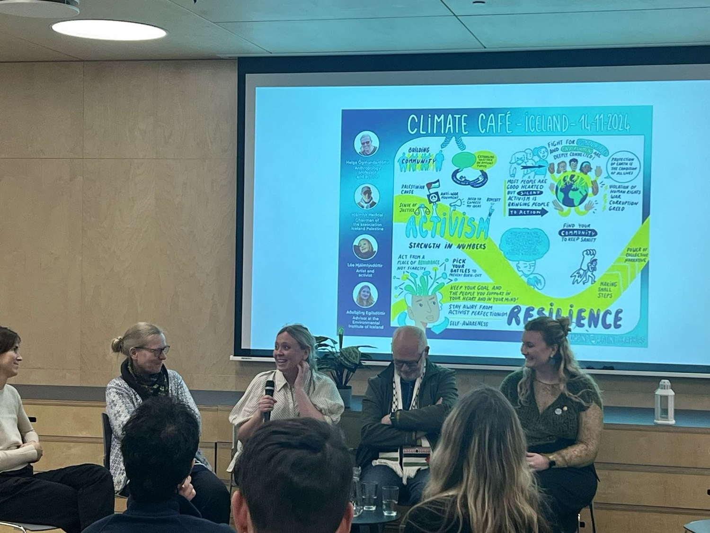
An anthropology professor, an artist, an environmental adviser and a civil-society chair on where activism gets its strength and how people keep going — the whole conversation drawn live on the wall behind them.
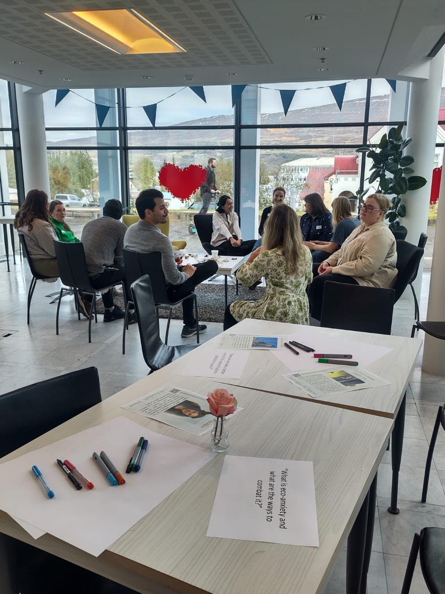
North Iceland, with the town's public library — small tables, worksheets and coffee, and the fjord through the window.
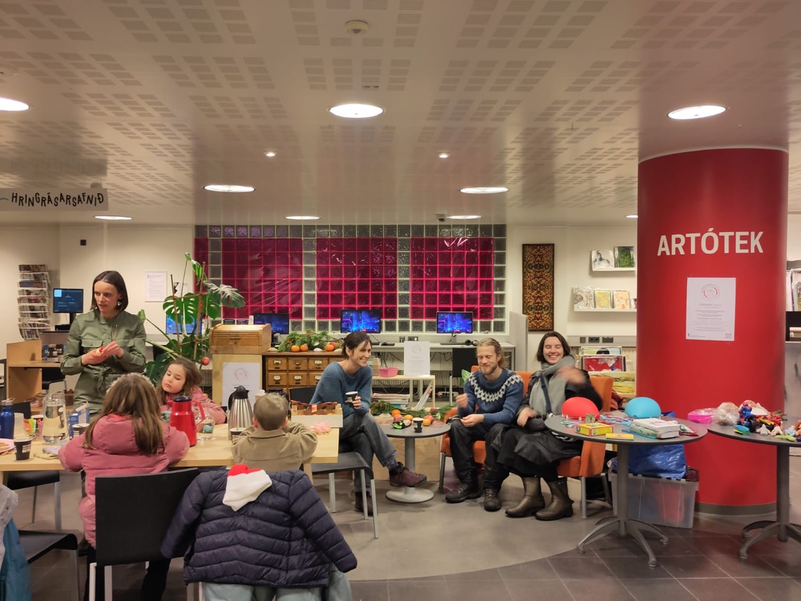
The city's central library in the middle of December — families, children and adults in the same room, which is what "all ages" is supposed to mean.
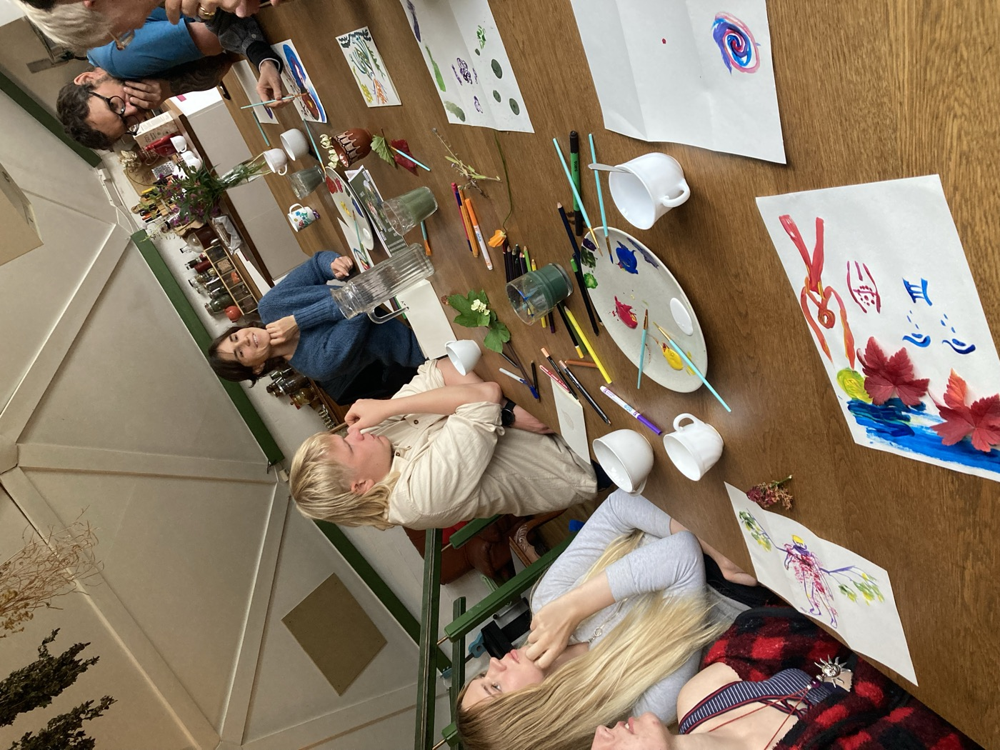
The feeling half of the café. Around one long table, people painted what environmental change feels like to them — with watercolours, pencils and leaves gathered from the garden — before anyone was asked to do anything about it.
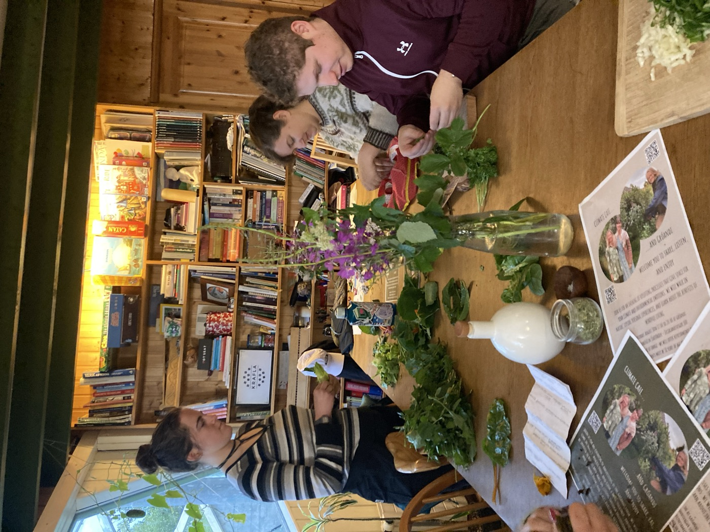
The doing half. Greens and herbs picked in the Gróandi garden, washed, chopped and cooked together at the same table, then shared — with the conversation carrying on over the food.
We are looking for Nordic and European partners, and we are ready to be one. Green Wellbeing is a registered public-benefit organisation with statutes, a board, an appointed auditor and a delivered programme behind it — everything a lead applicant needs from a partner, and signable in a fortnight rather than a quarter.
If you are assembling a consortium and need an Icelandic partner, write to us. We would much rather hear about a call early, while the design is still open, than be added at the end.
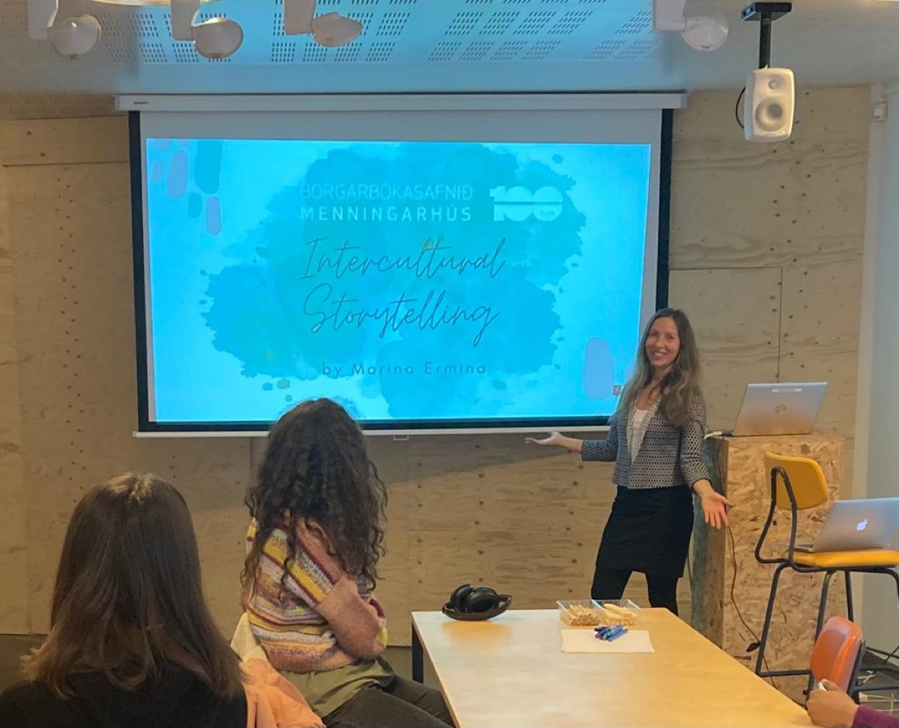
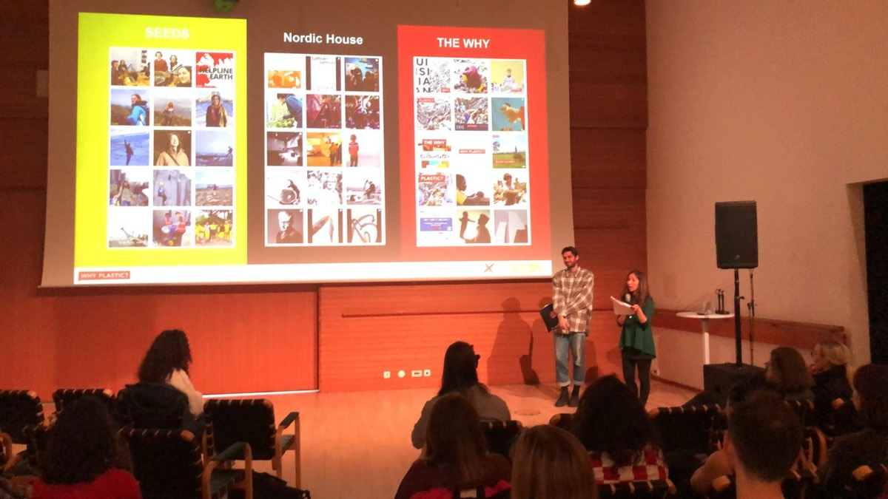
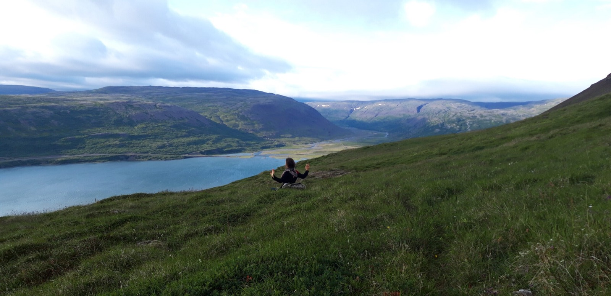
Green Wellbeing is a registered Icelandic almannaheillafélag — a public-benefit organisation with statutes, an elected board and an appointed auditor. We are deliberately small: what we offer funders and partners is a tested method, careful documentation, and a habit of paying the local people who make each event work.
To raise awareness and educate on environmental, social, cultural, health, wellbeing and peace-building issues, and to widen participation across all backgrounds — building active citizenship and diverse, sustainable communities.
To raise awareness and educate on important environmental, social, cultural, intercultural, health, wellbeing and peace-building issues; to increase the engagement of different social groups — across age, nationality, gender and background; and to strengthen cooperation between social, cultural and educational institutions, in order to create active citizenship and build diverse, intercultural, sustainable communities.Article 2.1 of the statutes · adopted 10 May 2023 · Act no. 110/2021 on public-benefit organisations
Marina is a mind-and-body therapist trained in Europe, India and Nepal, and has run wellbeing workshops since 2014. She holds an MA in Environment and Natural Resources from the University of Iceland, where her research explored human wellbeing and ecological sustainability in the Nordic countries. A trained educator and Waldorf practitioner, she has spent recent years developing Climate Cafés in Iceland. Marina loves gardening, foraging and preserving food. Her work comes from one conviction: that human wellbeing and the natural world are bound up together — and that caring for nature, and teaching others to, is how we keep it for the generations after us.
Marissa holds a master's degree in Environment and Natural Resources from the University of Iceland, with a focus on land use and the Icelandic Highlands, and is a researcher on PHOENIX, an international project led in Iceland by the University of Iceland. Through that work she has built extensive experience in sharing knowledge and facilitating conversations on complex issues. She also works at a preschool as a support staff member, group leader and instructor, and is a qualified yoga instructor. She co-developed Climate Café Iceland with Marina, and is deeply committed to making a positive contribution to society.
Dawid is a regenerative farmer and gardener. Since 2020 he has worked on Reykjalundur farm in the south of Iceland, from the very start of the project, and knows every side of growing food in a Nordic climate. He has run a number of educational workshops there and at Seljagarður community garden — on no-dig gardening, building composting systems, permaculture gardening and the importance of regenerative farming, including what farming in Iceland takes. He trained in permaculture design with Geoff Lawton and takes a hands-on approach to everything — plants and soil alike. What drives him is growing food locally with care for the soil and the environment, and showing others why that respect for nature matters.
If you run a library, a school, a community project or an NGO and are looking for a partner experienced in environmental and wellbeing education — or you are building a Nordic application and need an Icelandic partner with a delivered track record — write to us.
mermina@icloud.com Green Wellbeing on FacebookClimate Cafés are free and open to everyone — no background in environmental work needed, and no expectation that you call yourself an activist. Upcoming events are announced on our Facebook page.
facebook.com/ClimateCafeIceland